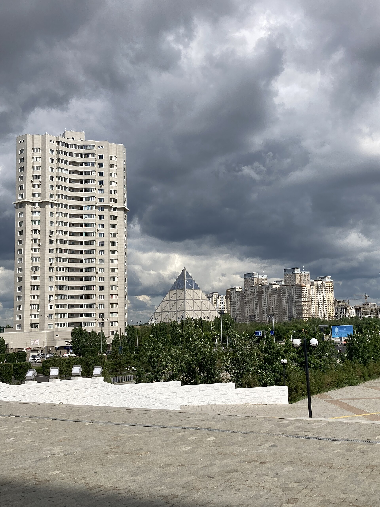
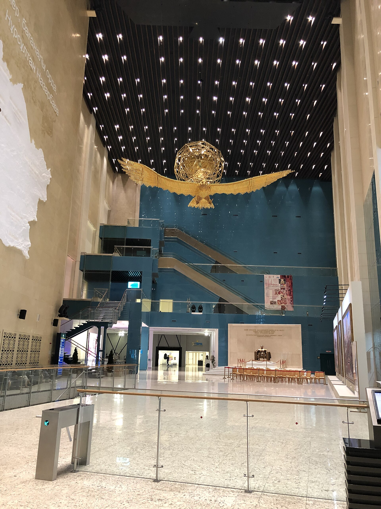
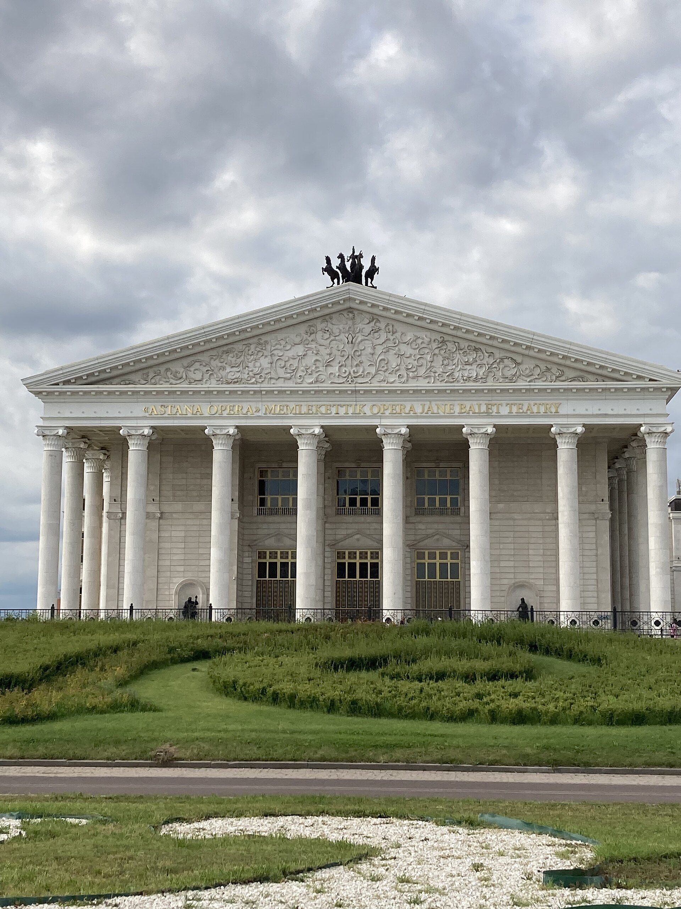

Destinations and gallery
Nine places we recommend to every guest of the capital, from glass towers to quiet parks.
City gallery







Day trips from Astana
Two natural escapes that fit into one day.

Burabay National Park
Pine forests, granite rocks and clear lakes, also called the Kazakh Switzerland. We leave the city at 08:00 and return after sunset.
- Boat trip on lake Borovoe
- Hike to the Okzhetpes rock
- Lunch in a lakeside village

Korgalzhyn Nature Reserve
A steppe reserve and the northernmost nesting place of pink flamingos. Binoculars and a ranger guide are included.
- Bird watching with a ranger
- Steppe museum in Korgalzhyn village
- Photo stop on the open steppe road
Practical tips before you go
Getting around
Buses cost 140 tenge and taxis are easy to order in the mobile apps.
Food
Try baursaks with tea for breakfast and beshbarmak for a big family dinner.
What to pack
Take a warm jacket even in summer: steppe evenings are cool and windy.
Etiquette
Cover shoulders and knees in mosques and take your shoes off at the entrance.
Found a place you like?
Add it to your booking request and we will build the route around your list.
Start booking